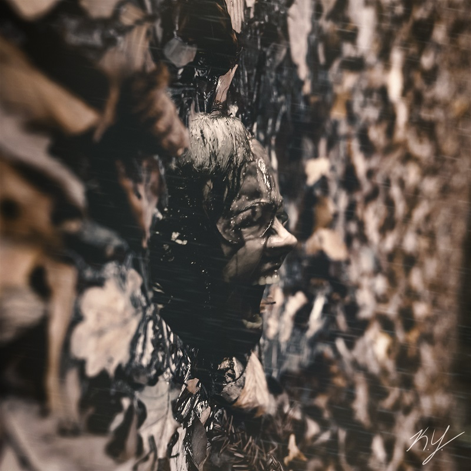

2020
I've added a completely new branch to my design tree, using Cinema 4D paired with Octane Renderer to create incredibly realistic scenes and characters, while still keeping my own fantasy-esque style in the artworks.

×

I've added a completely new branch to my design tree, using Cinema 4D paired with Octane Renderer to create incredibly realistic scenes and characters, while still keeping my own fantasy-esque style in the artworks.
Over this year I worked a lot with photo manipulation, blending completely different pictures together, with a heavy focus on precise color correction. Most of my artwork from this period had either a very dark or very light color scheme, with very few pieces being in the middle.
2018 was probably my most versatile year so far. I hadn't really found a solid focus for my design, so I went all over the place with my style, trying things from 3D modeling and animation to special effects to photorealism. I find the experience humorous as this venture did the exact opposite of narrowing down a focus, but instead brought my lackluster skills in those experimental fields up to mark with everything else. It's helped bring me closer to a jack-of-all-trades in design.

This was the year I really started getting into design and making artwork from concepts and themes I imagined, along with receiving heavy inspiration from music I listened to. A lot of pieces from this year were inspired by the many artists and albums I listen to.

I dove deeper into the technique of color correction after finding a free stock image site by the name of Wesaturate, and took a multitude of pictures from there and edited them to my liking. This experience introduced me to the true power of color correction, and how slight adjustments can make a huge difference in an image.

The earliest design project I could find. I had recently been camping in the mountains, and decided to edit some pictures from there as practice. I enjoyed modifying the colors, and that motivated me to edit other pictures and learn more of the software.